total_nonfarm <- us_employment %>%
filter(Title == "All Employees, Total Nonfarm")Economics 144 - US Employment Models
This project analyzes and forecasts US nonfarm employment using multiple time series models, including ARIMA, ETS, Holt-Winters, NNETAR, and Prophet. A combined forecast is also created to evaluate performance across models.
My Role: Introduction, Prophet Model, Combined Forecast Model, Conclusion & Future Work
I. Introduction
In this project, we analyze and forecast US employment using the “us_employment” dataset from the ffp3 package in RStudio. The dataset contains monthly employment data from January 1939 to June 2019. Our focus is on the series “All Employees, Total Nonfarm,” which captures total US employment excluding farmworkers. We split the data into training and test sets to evaluate several forecasting methods and compare their predictions against the actual test data. Specifically, we apply ARIMA, ETS, Holt-Winters, NNETAR, and Prophet models, and also create a combined forecast to assess whether averaging multiple forecasts improves accuracy. Model performance is evaluated using accuracy metrics, residual diagnostics, and autocorrelation tests, allowing us to identify the model that best captures the patterns in total nonfarm employment and provides the most reliable forecasts.
employment_ts <- ts(total_nonfarm$Employed, start=1939, frequency=12)
plot(employment_ts, xlab="Year", ylab="Total Employment", main="US Total Employment (Nonfarm)")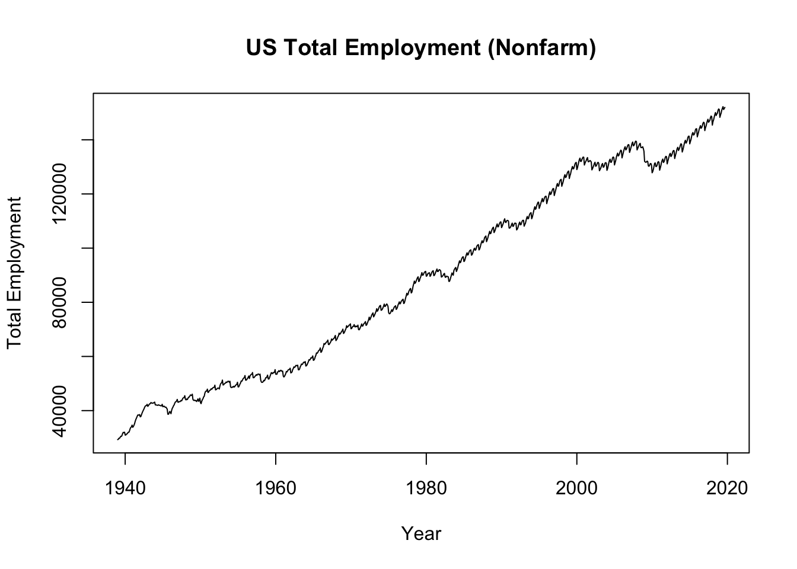
The time series plot for total employment in the US (nonfarming) shows an increasing trend from 1939 to 2019. There are some small dips in the number of employed throughout the years, but it does look like the general total employment increases. Seasonality in the data is also visible, and especially so past 1960 where the fluctuations indicating seasonality become more regular and continue on until the last observations. Some cycles may also be present in the data as the rises and dips in employment come in groups every so often. For example, the cycling can be seen around 1950, 1980, 2000, and 2008.
tsdisplay(employment_ts)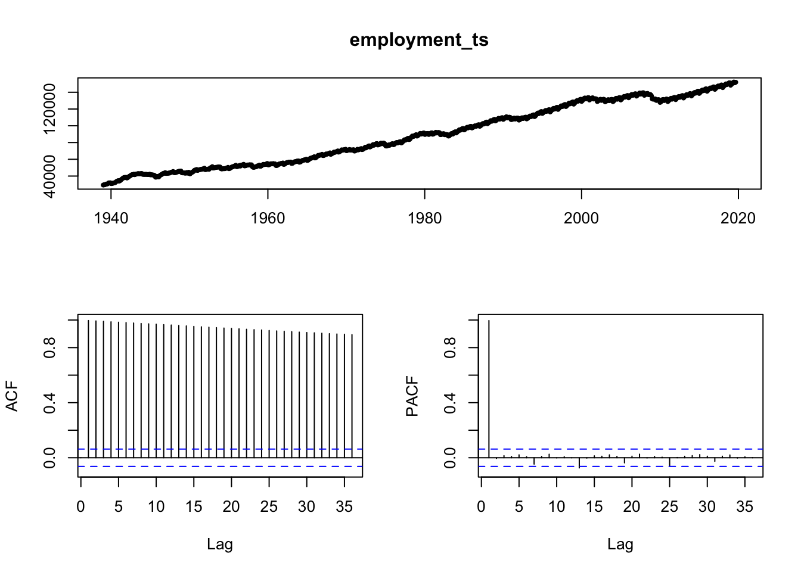
The tsdisplay showcasing the ACF and PACF plot of the total employment data shows a very prolonged decay of the spikes in the ACF plot, suggesting high persistence because of how slow the spikes take to get down to a magnitude of 0. The PACF plot shows one very significant spike out of the bound windows, with 3 very slightly significant spikes further along the lags that could suggest some seasonal component could be taken into account for a model.
employment_ts.train <- window(employment_ts, end=c(2017,6))
employment_ts.test <- window(employment_ts, start=c(2017,7))
autoplot(employment_ts) +
autolayer(employment_ts.train, series="Training") +
autolayer(employment_ts.test, series="Test") + theme_minimal()
- Results
ARIMA Forecast
employment_arima <- auto.arima(employment_ts.train)
employment_arimaSeries: employment_ts.train
ARIMA(2,0,1)(0,1,1)[12] with drift
Coefficients:
ar1 ar2 ma1 sma1 drift
1.8946 -0.9000 -0.6119 -0.6396 123.1009
s.e. 0.0210 0.0209 0.0376 0.0281 15.8391
sigma^2 = 49198: log likelihood = -6346.03
AIC=12704.06 AICc=12704.15 BIC=12733.07For the ARIMA model for total (nonfarm) employment in the US, the auto.arima output suggests that an ARIMA(2,0,1)(0,1,1) process would fit the data. This result suggests an AR(2), MA(1) process with 1 seasonal differencing, and seasonal MA(1). It takes into account the increasing trend of the train set for employment, as well as the seasonality that is visible in the time series plot of the original data.
arima_forecast <- forecast(employment_arima, h=27)
autoplot(arima_forecast, xlim=c(2000,2020), ylim=c(120000,160000)) +
autolayer(employment_ts.test, series = "Test") + theme_minimal()Scale for x is already present.
Adding another scale for x, which will replace the existing scale.Warning: Removed 732 rows containing missing values or values outside the scale range
(`geom_line()`).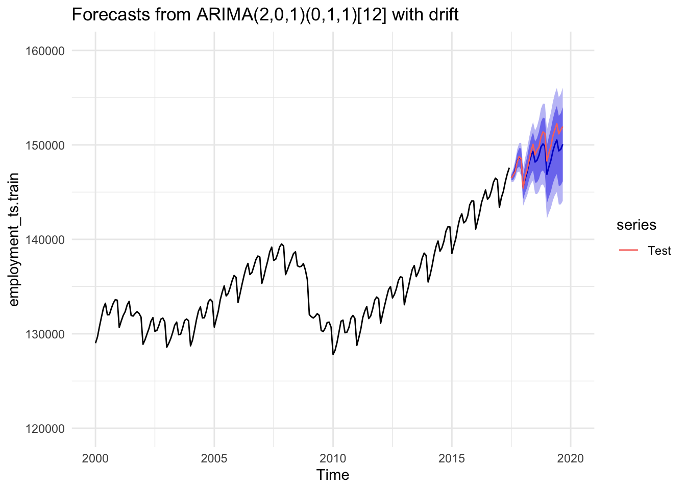
The forecast using the ARIMA model fit looks to follow along well with the pattern and fluctuations of the actual observed data, especially in the first few steps ahead. However, after those first few steps, the ARIMA forecast does not seem to be able to keep up with the increasing trend that is visible in the observed data. The forecast does follow along with the general trend of increasing employment as the years increase, but is not able to match the magnitude of increase that has actually been recorded.
ETS Forecast
employment_ets <- ets(employment_ts.train)
ets_forecast <- forecast(employment_ets, h=27)
autoplot(ets_forecast, xlim=c(2000,2020), ylim=c(120000,160000)) +
autolayer(employment_ts.test) + theme_minimal()Scale for x is already present.
Adding another scale for x, which will replace the existing scale.Warning: Removed 732 rows containing missing values or values outside the scale range
(`geom_line()`).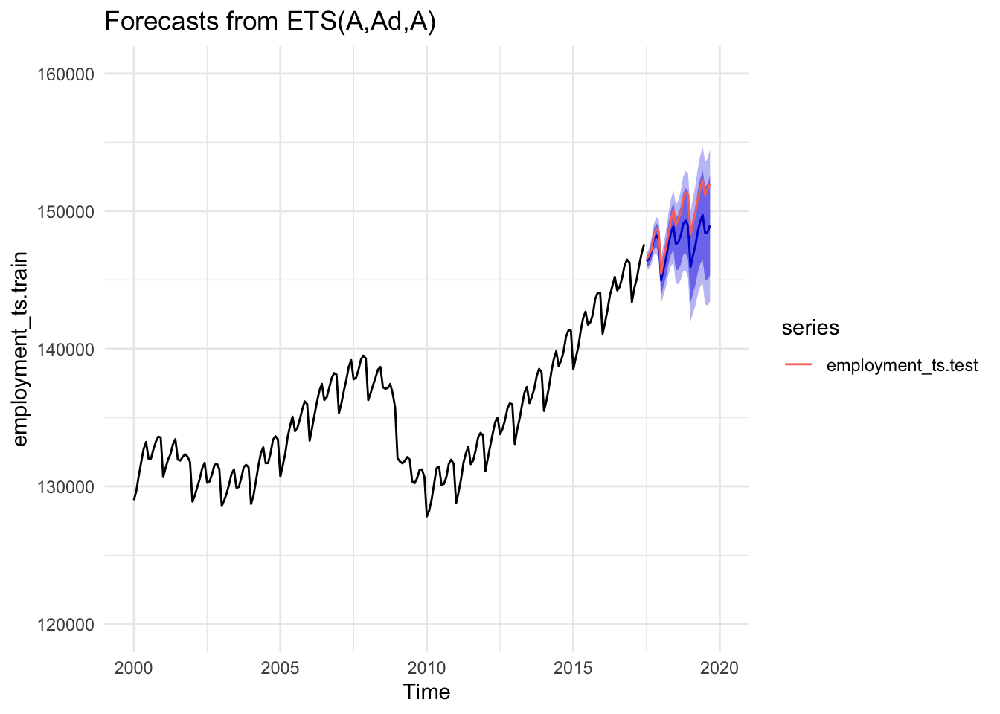
The forecast for total US employment using the ETS method is similar to the ARIMA model where the general shape follows closely with the actual observed data. This method also has the same issue where it is unable to predict a higher magnitude of increase to the number of employed people in the US. The forecast here predicts lower employment numbers compared to the ARIMA model forecast. The observed data sits in the upper bounds of the confidence interval for this method.
Compare Training & Testing Errors
acc <- tibble(
model = c("ARIMA", "ETS"),
RMSE = c(
accuracy(arima_forecast, employment_ts.test)["Test set", "RMSE"],
accuracy(ets_forecast, employment_ts.test)["Test set", "RMSE"]),
MAE = c(
accuracy(arima_forecast, employment_ts.test)["Test set", "MAE"],
accuracy(ets_forecast, employment_ts.test)["Test set", "MAE"]),
MAPE = c(
accuracy(arima_forecast, employment_ts.test)["Test set", "MAPE"],
accuracy(ets_forecast, employment_ts.test)["Test set", "MAPE"])
)
acc# A tibble: 2 × 4
model RMSE MAE MAPE
<chr> <dbl> <dbl> <dbl>
1 ARIMA 1118. 896. 0.596
2 ETS 1778. 1507. 1.00 employment_tsibble <- as_tsibble(employment_ts)
# Train/test split
train <- employment_tsibble |> filter_index(~ "2017-06")
test <- employment_tsibble |> filter_index("2017-07" ~ .)
# Fit models
fit <- train |>
model(
arima = ARIMA(value),
ets = ETS(value)
)# Forecast horizon
h <- nrow(test)
fc <- fit |> forecast(h = h)
# Plot
fc |> autoplot(employment_tsibble) +
coord_cartesian(xlim=c(yearmonth("2000 Jan"), yearmonth("2020 Jan")), ylim = c(120000, 160000))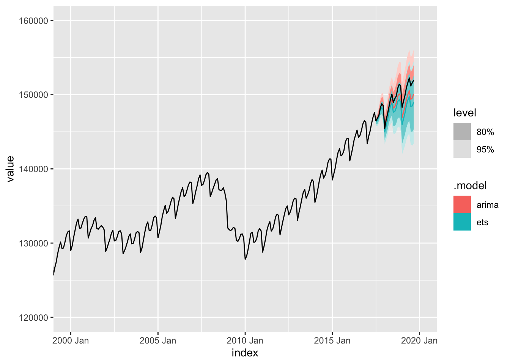
# Accuracy
fc |> accuracy(test)# A tibble: 2 × 10
.model .type ME RMSE MAE MPE MAPE MASE RMSSE ACF1
<chr> <chr> <dbl> <dbl> <dbl> <dbl> <dbl> <dbl> <dbl> <dbl>
1 arima Test 861. 1118. 896. 0.572 0.596 NaN NaN 0.904
2 ets Test 1507. 1778. 1507. 1.00 1.00 NaN NaN 0.892Holt-Winters,
h <- length(employment_ts.test)
hw_add <- hw(employment_ts.train, seasonal = "additive", h = h)
hw_mul <- hw(employment_ts.train, seasonal = "multiplicative", h = h)
autoplot(employment_ts, series = "Observed") +
autolayer(hw_mul, series = "HW Multiplicative") +
autolayer(hw_add, series = "HW Additive") +
autolayer(employment_ts.test, series = "Test (Actual)") +
labs(
title = "Holt–Winters Forecasts (Additive vs Multiplicative)",
x = "Year",
y = "Total Employment (Nonfarm)"
) +
guides(colour = guide_legend(title = "Series")) +
coord_cartesian(xlim = c(2000, 2020)) + theme_minimal()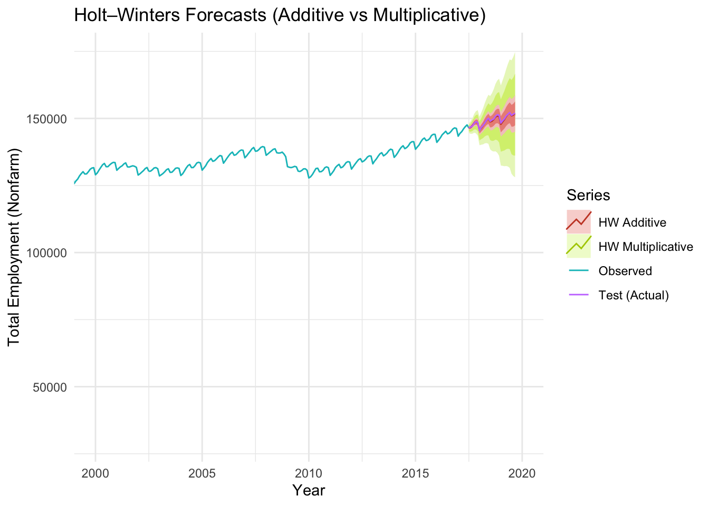
acc_hw_add <- accuracy(hw_add, employment_ts.test)["Test set", c("RMSE","MAE","MAPE")]
acc_hw_mul <- accuracy(hw_mul, employment_ts.test)["Test set", c("RMSE","MAE","MAPE")]
acc_summary <- tibble(
model = c("HW_additive", "HW_multiplicative"),
RMSE = c(acc_hw_add["RMSE"], acc_hw_mul["RMSE"]),
MAE = c(acc_hw_add["MAE"], acc_hw_mul["MAE"]),
MAPE = c(acc_hw_add["MAPE"], acc_hw_mul["MAPE"])
)
acc_summary# A tibble: 2 × 4
model RMSE MAE MAPE
<chr> <dbl> <dbl> <dbl>
1 HW_additive 259. 212. 0.141
2 HW_multiplicative 526. 453. 0.302The additive model yields much lower RMSE, MAE, and MAPE (258.7, 211.6, 0.141) than the multiplicative model (525.8, 452.8, 0.302). Accordingly, we adopt the additive Holt–Winters specification for subsequent analysis.
preferred_hw <- hw_add
resid_hw <- residuals(preferred_hw)
ggtsdisplay(resid_hw, main = "Residual Diagnostics — Holt–Winters Additive")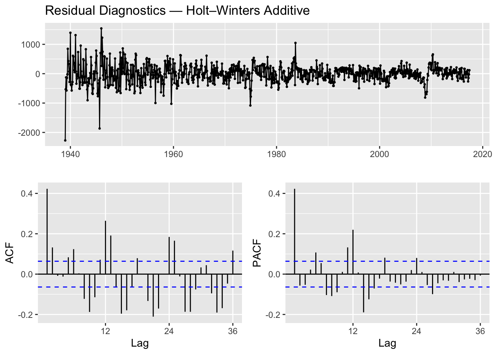
Box.test(resid_hw, lag = 24, type = "Ljung-Box", fitdf = 0)
Box-Ljung test
data: resid_hw
X-squared = 576.56, df = 24, p-value < 2.2e-16The residuals show clear serial correlation, with long runs of positive and negative errors and several persistent shocks. Additionally, the Ljung–Box test strongly rejects white noise (p < 2.2e-16), further confirming that substantial autocorrelation remains. Thus, while Holt–Winters captures the trend and seasonality, it does not fully model the underlying dynamics, and a more flexible model would be required for a proper statistical fit.
NNETAR
set.seed(123)
nnet_model <- nnetar(employment_ts.train)
nnet_fc <- forecast(nnet_model, h = length(employment_ts.test))
autoplot(nnet_fc) +
autolayer(employment_ts.test, series = "Test") +
labs(title = "NNETAR Forecast",
x = "Year",
y = "Total Employment") + theme_minimal()
nnet_accuracy <- accuracy(nnet_fc, employment_ts.test)
nnet_modelSeries: employment_ts.train
Model: NNAR(1,1,2)[12]
Call: nnetar(y = employment_ts.train)
Average of 20 networks, each of which is
a 2-2-1 network with 9 weights
options were - linear output units
sigma^2 estimated as 607219nnet_accuracy ME RMSE MAE MPE MAPE MASE
Training set 2.232815e-02 779.2424 571.9611 -0.01166318 0.7053657 0.2770047
Test set 2.698867e+03 3203.5652 2798.9652 1.79349778 1.8621064 1.3555581
ACF1 Theil's U
Training set 0.2166367 NA
Test set 0.7130423 2.921429The plot shows that the NNETAR model’s mean forecast becomes noticeably flattened and smooth, failing to reproduce the sharp swings that appear in the actual data. Additionally, the test-set errors are much larger than the training errors (RMSE = 3204, MAPE = 1.86%), showing that the model does not generalize well to data beyond the training set.
tsdisplay(residuals(nnet_model), main = "Residuals from NNETAR model")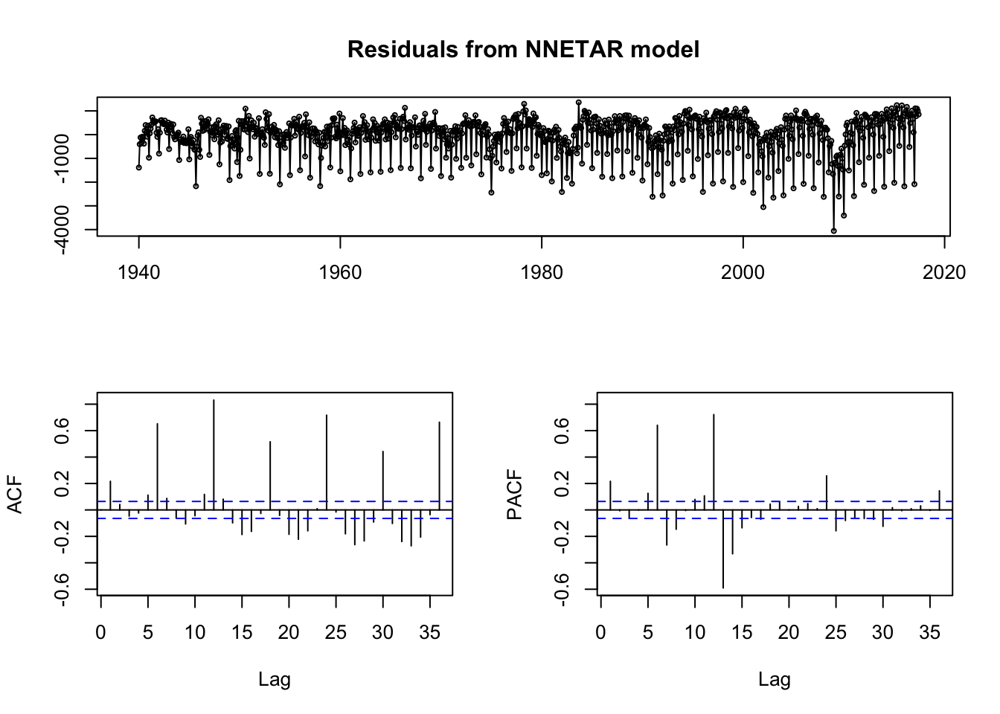
Box.test(residuals(nnet_model), lag = 24, type = "Ljung-Box")
Box-Ljung test
data: residuals(nnet_model)
X-squared = 2069.1, df = 24, p-value < 2.2e-16The residuals from the NNETAR model exhibit noticeable remaining structure. In particular, the time-series plot shows recurring negative spikes consistent with seasonal patterns that the network did not fully capture. Additionally, the ACF and PACF plots display several statistically significant autocorrelations across a wide range of lags, indicating that the residuals are not behaving like white noise. Consistent with this, the Box–Ljung test strongly rejects the null of no autocorrelation (p < 2.2e−16). Together, these diagnostics suggest that the NNETAR model has not fully extracted all temporal dependence in the series, leaving meaningful autocorrelation in the residuals, which implies that the network would need a richer structure such as additional lag inputs, more hidden units, or a larger seasonal embedding to adequately learn the underlying dynamics of total nonfarm employment in the US.
Prophet
library(Rcpp)
library(fable.prophet)
# Prophet Model
fit_prophet <- train |>
model(prophet(value ~
season(period = "year", order = 10) +
season(period = "month", order = 3)))
fit_prophet |>
components() |>
autoplot()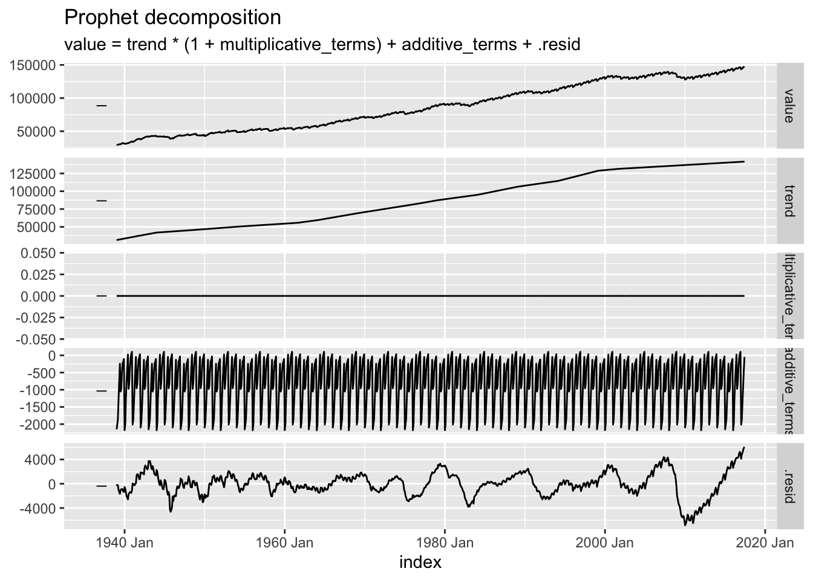
# Prophet Forecast
fc_prophet <- fit_prophet |>
forecast(h = nrow(test))
fc_prophet |>
autoplot(train) +
labs(x = "Year", y = "Total Employment",
title = "US Nonfarm Employment Prophet Forecast") + theme_minimal() +
autolayer(test, series = "Test")Plot variable not specified, automatically selected `.vars = value`Warning in geom_line(eval_tidy(expr(aes(!!!aes_spec))), data = object, ..., :
Ignoring unknown parameters: `series`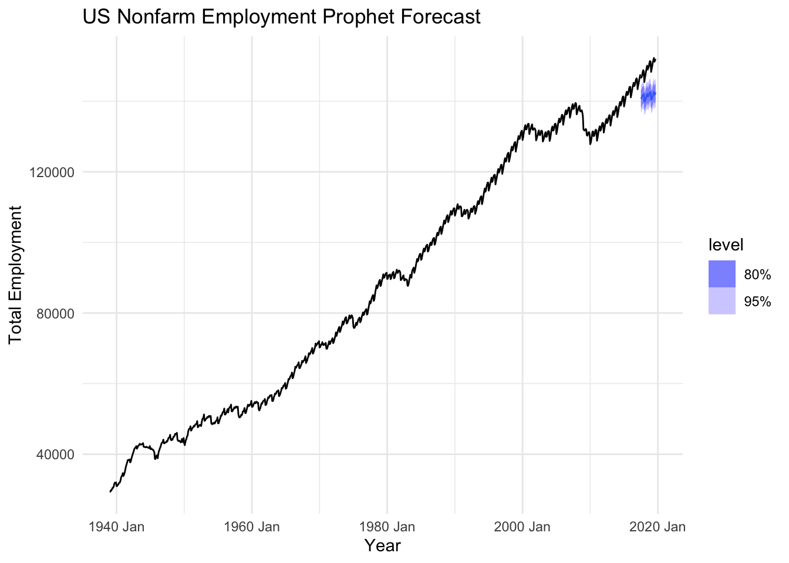
# Accuracy on test data
prophet_accuracy_test <- accuracy(fc_prophet, test)
# Accuracy on training data
prophet_accuracy_train <- accuracy(fit_prophet)
prophet_accuracy <- dplyr::bind_rows(
prophet_accuracy_train |> mutate(data = "Training"),
prophet_accuracy_test |> mutate(data = "Test"))
prophet_accuracy# A tibble: 2 × 11
.model .type ME RMSE MAE MPE MAPE MASE RMSSE ACF1 data
<chr> <chr> <dbl> <dbl> <dbl> <dbl> <dbl> <dbl> <dbl> <dbl> <chr>
1 "prophet(… Trai… 9.69e-2 1949. 1460. -0.0640 1.81 0.707 0.820 0.975 Trai…
2 "prophet(… Test 7.86e+3 7967. 7863. 5.26 5.26 NaN NaN 0.853 Test The Prophet model captures the seasonal patterns in US nonfarm employment and shows the general upward trend. However, the forecast underestimates the magnitude of increases in the test period, resulting in poor accuracy (test RMSE = 7977.4, MAE = 7874.5). While training performance is reasonable, the model struggles to forecast the recent trend, making it less reliable than Holt-Winters or ARIMA for this dataset.
fit_prophet |> gg_tsresiduals()Warning: `gg_tsresiduals()` was deprecated in feasts 0.4.2.
ℹ Please use `ggtime::gg_tsresiduals()` instead.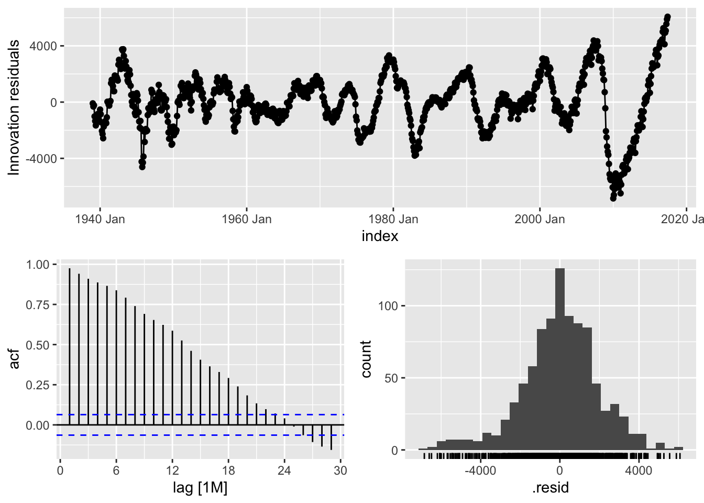
prophet_resid <- residuals(fit_prophet)
prophet_resid_vec <- as.numeric(prophet_resid$.resid)
Box.test(prophet_resid_vec, lag = 24, type = "Ljung-Box")
Box-Ljung test
data: prophet_resid_vec
X-squared = 8385, df = 24, p-value < 2.2e-16The residuals of the Prophet model generally fluctuate around zero, but the variance is clearly non-constant, with periods of larger and smaller deviations. The Ljung-Box test strongly rejects the null hypothesis of white noise (p < 2.2e-16) confirming that the residuals are highly autocorrelated and that the model fails to capture all temporal structure in the data. Overall, this suggests that while Prophet captures the broad trend and seasonality, it leaves substantial patterns unexplained, particularly in short-term dynamics.
Combination Forecast (ARIMA, ETS, Holt-Winters, NN)
# load libraries
library(forecast)
library(fable)
library(fable.prophet)
library(tsibble)
library(ggplot2)
library(dplyr)
employment_ts.train <- window(employment_ts, end=c(2017,6))
employment_ts.test <- window(employment_ts, start=c(2017,7))
h <- length(employment_ts.test)
employment_tsibble <- as_tsibble(employment_ts.train)
# ARIMA
employment_arima <- auto.arima(employment_ts.train)
arima_forecast <- forecast(employment_arima, h=h)
# ETS
employment_ets <- ets(employment_ts.train)
ets_forecast <- forecast(employment_ets, h=h)
# Holt-Winters (additive)
hw_forecast <- hw(employment_ts.train, seasonal = "additive", h=h)
# NNETAR
nnet_model <- nnetar(employment_ts.train)
nnet_fc <- forecast(nnet_model, h=h)
# Prophet
fit_prophet <- employment_tsibble |>
model(
prophet(value ~ season(period = "year", order = 10) +
season(period = "month", order = 3)))
fc_prophet <- fit_prophet |> forecast(h = h)
# Prophet mean as forecast
prophet_ts <- ts(as.numeric(fc_prophet$.mean),
start=start(employment_ts.test),
frequency=12)
# Combined Forecast
fc_combo <- (arima_forecast$mean + ets_forecast$mean + hw_forecast$mean +
nnet_fc$mean + prophet_ts) / 5
combo_ts <- ts(fc_combo, start=start(employment_ts.test), frequency=12)
# Plot all forecasts and combination
autoplot(window(employment_ts, start=c(2000,1))) +
autolayer(arima_forecast, series="ARIMA", PI = FALSE) +
autolayer(ets_forecast, series="ETS", PI = FALSE) +
autolayer(hw_forecast, series="Holt-Winters", PI = FALSE) +
autolayer(nnet_fc, series="NNETAR", PI = FALSE) +
autolayer(prophet_ts, series="Prophet") +
autolayer(combo_ts, series="Combination") +
xlab("Year") + ylab("Total Employment") +
ggtitle("Forecast Combination for US Nonfarm Employment") +
theme_minimal()
As seen in the above plot, the Holt-Winters model appears to track the actual test data most closely, capturing much of the seasonality, trend, and fluctuations. The ARIMA and ETS forecasts appear to produce similar predictions, following the seasonality of the test data, but seemingly underestimates the magnitude of the trend a bit. The NNETAR forecast is rather unique, in that it appears to be generally slightly increasing, but does not capture the seasonality or strength of the trend. The Prophet forecast demonstrates the seasonality in the test data, but fails to forecast at an appropriate height and underestimates the increasing trend, resulting in predictions that are perhaps the most far off from the test data. The combination forecast provides a middle-ground prediction that balances the strengths and weaknesses of the individual models (though the prophet forecast has a significant effect on the height), producing perhaps a more stable forecast than any single model.
# Accuracy on the test data
acc_arima <- accuracy(arima_forecast$mean, employment_ts.test)
acc_ets <- accuracy(ets_forecast$mean, employment_ts.test)
acc_hw <- accuracy(hw_forecast$mean, employment_ts.test)
acc_nnet <- accuracy(nnet_fc$mean, employment_ts.test)
acc_prophet <- accuracy(prophet_ts, employment_ts.test)
acc_combo <- accuracy(combo_ts, employment_ts.test)
# Combine all results in one table
accuracy_table <- rbind(
data.frame(Model="ARIMA", acc_arima),
data.frame(Model="ETS", acc_ets),
data.frame(Model="Holt-Winters", acc_hw),
data.frame(Model="NNETAR", acc_nnet),
data.frame(Model="Prophet", acc_prophet),
data.frame(Model="Combination", acc_combo)
)
accuracy_table Model ME RMSE MAE MPE MAPE
Test set ARIMA 861.1017 1117.8595 896.2429 0.5717054 0.5956312
Test set1 ETS 1506.9323 1778.2519 1506.9323 1.0028195 1.0028195
Test set2 Holt-Winters 183.0432 258.7163 211.6124 0.1219424 0.1413711
Test set3 NNETAR 2697.8265 3212.9025 2802.6637 1.7926404 1.8644962
Test set4 Prophet 7875.8166 7979.6997 7875.8166 5.2651452 5.2651452
Test set5 Combination 2624.9440 2782.8398 2624.9440 1.7508506 1.7508506
ACF1 Theil.s.U
Test set 0.9043343 1.0186841
Test set1 0.8921786 1.6217105
Test set2 0.5862243 0.2367557
Test set3 0.7154183 2.9295736
Test set4 0.8543141 7.2468189
Test set5 0.8402855 2.5382386The results from the accuracy function overall seem to confirm the observations of the plot. The forecast evaluation on US (nonfarm) employment show that the additive Holt-Winters model preferred best, achieving the lowest errors (RMSE = 258.7, MAE = 211.6, MAPE = 0.14) and low residual autocorrelation (ACF1 = 0.58), indicating a strong fit to the test data. Therefore, this is our preferred model. ARIMA was a reasonable alternative, while ETS, NNETAR, and Prophet exhibited higher errors and more correlated residuals, with Prophet performing particularly poorly. The combination of all the models did not improve accuracy due to the inclusion of forecasts that performed poorly compared to the Holt-Winters model.
- Conclusion and Future Work
The analysis of US nonfarm employment from 1939 to 2019 shows a clear upward trend, regular seasonality, and periodic cycles. Among the models tested, the additive Holt-Winters method provided the most accurate forecasts, effectively capturing trend, seasonality, and fluctuations. ARIMA and ETS performed reasonably well but slightly underestimated recent growth, while NNETAR and Prophet struggled to reproduce sharp swings and trends, leading to larger forecast errors. The combination forecast provided a stable middle-ground prediction, though it seemed to be largely influenced by the weaker models. Future work may explore weighted combination forecasts, or using more advanced neural network models to better capture nonlinear patterns. Additionally, Markov Chain approaches could be investigated to model employment changes, capturing structural shifts in the labor market that standard time series models may miss. Incorporating external economic indicators or finding structural breaks may further improve forecast accuracy as well as allow us to better understand the contributors behind total employment, making predictions of US nonfarm employment more reliable for decision-making.
- References
The dataset is originally from the US Bureau of Labor Statistics. However we have included the citation for the ffp3 package as well.
Hyndman, R. J., & Athanasopoulos, G. (2025). us_employment: Monthly U.S. Employment Data (1939–2019). In fpp3 (R package). Retrieved from CRAN. Original data from the U.S. Bureau of Labor Statistics.
U.S. Bureau of Labor Statistics. Current Employment Statistics (National), “All Employees, Total Nonfarm Payroll Employment” (Seasonally Adjusted), Series ID CES3000000001. Retrieved via fpp3 package in R.